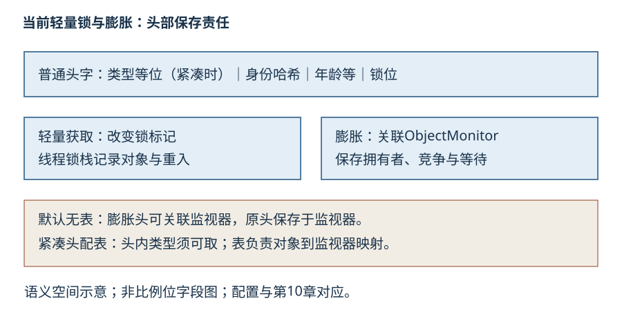

第六篇 · 内存模型、同步与线程
第27章 synchronized 与锁的实现
一把Java锁可以经过不同表示。先把监视器语义画清楚，再分辨轻量获取、膨胀、等待和底层停放各在解决什么问题。
本章基于 Java 开发工具包（Java Development Kit，JDK）25.0.5.0.2 与 OpenJDK HotSpot；Java 虚拟机（Java Virtual Machine，JVM）的实现结论固定到提交 1775ea114f64。规范、实现与本轮观察分别解释。源码阅读、运行说明与证据索引相互对应。
27.1 同步语义与字节码
27.1.1 同步块和方法的入口不同
同步块以monitorenter进入，编译器为正常路径与异常处理路径安排monitorexit。同步方法以方法标志ACC_SYNCHRONIZED表达，由调用与返回机制承担进入退出；实例方法锁this，静态方法锁声明类的Class镜像。反汇编时没有看到成对指令，不表示同步方法没有监视器语义。
同一线程可以重入同一监视器；每次进入要有相应退出。异常离开同步体仍必须释放相应锁。本章用两层同步体正常重入，不为演示异常解锁另造故障；异常释放依据语言规范与实际javap异常表。Object.wait还必须在当前拥有该监视器时调用。
27.1.2 互斥和可见性分别解释
互斥使同一时刻只有一个线程拥有该监视器；释放与后续获取之间的同步边使临界区写入可以被后续持有者观察。前者约束谁能执行，后者约束看见什么。只有所有相关访问遵守同一个协议，才能用这组性质维护不变量。
本例ready只在monitor下访问，通知者持锁写true，等待者重新获取同一monitor再读。notifyAll本身既没有转让拥有权，也不直接把条件变成true。等待条件由应用状态表达，通知只是促使等待者重新检查。

27.2 轻量级路径与膨胀
27.2.1 从当前默认路径开始
本机默认LockingMode为2，即当前轻量锁路径。锁栈记录线程所锁对象，快速获取通过原子变更头部锁状态取得拥有权；重入可以通过锁栈识别，退出根据重入情况与当前表示处理。编译代码、解释器及运行时有相应入口，不意味着每一次进入都调用同一个C++慢函数。
固定LightweightSynchronizer的fast_lock_try_enter展示头部原子更新；enter等路径处理锁栈容量、重入、已有监视器和竞争。失败不等于立即系统睡眠，还可能重试、自旋或膨胀。默认路径不是旧偏向锁，也不是把对象头常规替换为栈上锁记录地址的历史方案。S2
27.2.2 监视器承担更丰富的竞争协议
膨胀为对象关联ObjectMonitor，以保存拥有者、重入、竞争和等待等信息。wait需要等待集合，本例日志显示教学monitor因Monitor Wait膨胀，随后竞争者的进入事件记录约6.01秒。不能把这个原因误写成“先看到竞争才发生膨胀”。
轻量状态与ObjectMonitor不是两把应用可独立选择的锁，而是同一监视器语义的不同实现表示。膨胀可以保留当前拥有者并接续竞争；它不是对象身份变化，也不承诺从此永远使用膨胀表示。与对象头和收缩的协作见27.5。
27.3 原子操作、自旋与阻塞
27.3.1 一次比较并交换解决哪一步
比较并交换（Compare-and-Swap，CAS）只在当前位置仍等于期望值时安装新值，并返回成败。它可以竞争修改锁状态或拥有者，却不能自动把周围任意多条业务操作变成原子事务。失败表示状态已变，需要重新判断，不等于可以无限原地重试。
原子性还要与获取、释放及全序约束配合。编译器和硬件具体如何满足排序依赖第25章；看到CAS指令并不能省去所有可见性分析。无竞争快速成功与有竞争反复失败的成本不同，也不能用“没有操作系统调用”直接推导可伸缩。
27.3.2 自旋、排队与停放的取舍
短时自旋避免立即切换，但会消耗处理器并增加同一缓存行的竞争；排队与停放减少持续忙等，却引入唤醒与重新调度。ObjectMonitor按当前拥有者、队列、竞争计数和启发式策略在这些阶段协作，具体阈值是实现条件，不是Java语言承诺。
唤醒后继并不保证它先于新到达线程取得锁，吞吐、调度和公平之间有不同策略。本轮竞争时间主要由显式持锁sleep窗口造成，只能说明该线程等待获取monitor，不能用6秒当锁操作固有延迟，也没有比较两种锁的吞吐。
27.4 等待与通知
27.4.1 释放、等待与重获是三个阶段
wait把线程加入该对象的等待集合，释放它对该监视器的全部重入层数；返回前必须重新获取并恢复相应层数。它不会释放线程同时持有的其他监视器。notify选择一个等待者，notifyAll使当前等待集合中的线程重新具备竞争条件，调用者仍继续持锁直到退出。
本轮转储的monitor-holder处于TIMED_WAITING睡眠，却两次标注locked同一个对象；monitor-contender为BLOCKED。monitor-waiter则已因1秒超时离开等待集合，处于waiting to re-lock in wait()。这份快照发生在notifyAll之前，不能用它伪造“通知后立刻运行”的时间线。

27.4.2 条件循环处理多种返回原因
条件必须在同一监视器内检查，并用while覆盖wait：通知可能属于其他条件，另一个线程可能先消费条件，超时不意味着条件成立，虚假唤醒也被允许。若需要截止时间，应重新计算剩余预算；本例以短周期等待加总截止时间限制观察窗口。
中断导致的wait异常同样要在重新获取监视器之后交付，通知和中断竞争时按规范处理。不要把异常处理放成悄悄继续原任务；本例恢复中断标记并退出。日志中wait返回、竞争者取得锁的先后只是这一次交错，不证明公平。S1
27.5 监视器收缩与对象头协作
27.5.1 空闲监视器与死对象不是一回事
空闲ObjectMonitor可以进入异步收缩协议；实现须检查拥有者、等待者、竞争计数以及并发使用情况，并使可能持有旧监视器关联的线程安全接续。不能只看owner为空就立即释放，因为还有等待者、进入竞争或并发收缩的保护要求。固定ObjectMonitor::deflate_monitor与同步器回收路径给出具体检查。
监视器资源收回不等于关联Java对象已不可达或已被回收，反之对象回收也有自己的协议。本轮末尾日志做了in-use列表审计，但没有取得教学对象的异步收缩事件；收缩条件和重新膨胀按源码解释，不把退出时审计误认作已经观察到每个对象收缩。
27.5.2 身份哈希与紧凑头须同时保存
第10章固定布局保留身份哈希、年龄及锁标记；轻量路径能保留大部分头部信息。传统无表模式膨胀后可在头中关联监视器，原头保存于监视器；紧凑对象头唯一头字还含类型编码，因而当前配置配合对象监视器表维持对象到监视器的映射。
本轮只读参数查询与第10章一致：默认LockingMode=2、UseCompactObjectHeaders=false、UseObjectMonitorTable=false；启用紧凑头后表为true。哈希计算不代表对象地址，也不保证哈希唯一；当前轻量锁计算哈希不能按旧栈锁故事一概说成必然膨胀。本例末尾哈希仅是身份观察，没有读取中间头字或据其数值反推锁状态。

27.6 类库锁与运行时原语
27.6.1 类库队列组织同步策略
抽象队列同步器（AbstractQueuedSynchronizer，AQS）用状态字段、原子更新、等待队列和停放原语构建同步策略。子类定义成功获取／释放条件；ReentrantLock以拥有线程和计数表达重入，可以提供公平选择、可中断获取、超时尝试及多个Condition。Condition等待释放的是相应类库锁，不能和Object.wait的等待集合混用。
AQS队列与ObjectMonitor队列属于不同实现。ReentrantLock等待者通常经LockSupport停放，所以转储可能显示WAITING而不是内置监视器获取时的BLOCKED。共同使用park等基础能力，不表示类库锁最后都等价转成某个对象的synchronized。

27.6.2 按所需契约选择锁
内置监视器提供语言层的进入退出、重入和等待通知；类库锁提供额外获取和条件策略，但要求调用者在finally中显式unlock。本例类库锁连续lock两次得到holdCount=2，再按层数解锁，展示的是重入契约；没有构造类库竞争排行榜。
JDK 25的虚拟线程监视器协作已改变旧固定条件，不能以“synchronized一定固定载体”为理由机械替换全部锁。选择还应看可中断性、多个条件、诊断、复杂度与真正的竞争证据。锁保护范围过大、持锁调用慢服务或嵌套锁顺序错误，不会因为更换类名自动消失。
观察与边界
CH27-E01实际取得重入日志、三线程转储、监视器膨胀日志及JDK飞行记录器（JDK Flight Recorder，JFR）事件。教学对象的膨胀原因是Monitor Wait，竞争者进入等待约6.01秒，等待者超时后重获锁等待约5.00秒；这些时段由持锁6秒窗口主导。进程退出0。
没有主动死锁、异常解锁故障、性能比较或异步收缩实测。普通默认配置运行事件；紧凑配置只做独立参数查询，不声称已有紧凑模式的同一竞争运行。
回顾与思考
语言语义不依赖具体锁表示；等待集合与进入竞争必须分开；通知不转移拥有权，空闲监视器回收也不等于对象回收。
- 为何wait超时之后还能在BLOCKED状态停留？
- 为何owner为空不足以安全释放ObjectMonitor？
- 为什么AQS等待者的状态可能与内置监视器竞争者不同？
第28章把当前监视器行为接到虚拟线程的挂载与卸载。
来源
- 语言规范25监视器与等待：正常／异常退出、等待、通知和中断
- LightweightSynchronizer：fast_lock_try_enter、enter、膨胀和监视器表
- ObjectMonitor：enter、wait、notify_all、deflate_monitor
- 同步器与对象头：关联markWord.hpp和arguments.cpp的模式适配
- AQS与ReentrantLock：状态与等待队列；ReentrantLock.Sync的获取策略
精确路径、符号、条件和本轮记录见来源索引；源码阅读页是教学源码，不冒充HotSpot实现。